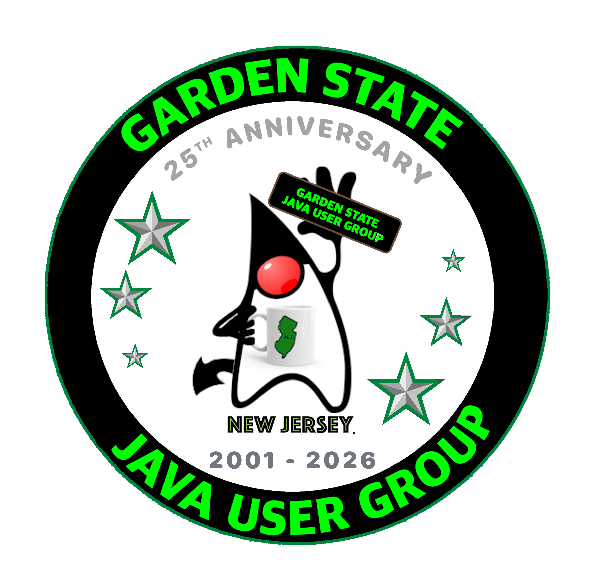

Virtual threads help Java applications handle more requests at once. But what happens when a database slows down, requests run one at a time, or work continues after a timeout?
Through three live demos in a small JDK 25 reservation service, we'll explore these problems and fix them step by step. You'll leave with practical checks and single-file examples to try yourself. No prior virtual-thread knowledge needed.
A N M Bazlur Rahman is a Java Champion and Senior Staff Software Engineer with over a decade of experience building and scaling systems on the JVM. His work focuses on modern Java, especially concurrency, virtual threads, and the evolving architecture of high-performance applications.
He is a Contributing Editor at InfoQ and a regular writer at Foojay, where he covers Java platform evolution and emerging trends. Bazlur is also the founder of the Java User Group Bangladesh, a community he has been growing since 2013 through meetups and conferences.
An active international speaker, he is known for practical, engineering-focused talks that cut through hype and focus on real-world trade-offs. He is the author of five Java books in Bengali, as well as the O’Reilly title Modern Concurrency in Java.